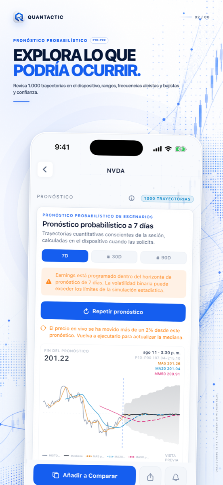
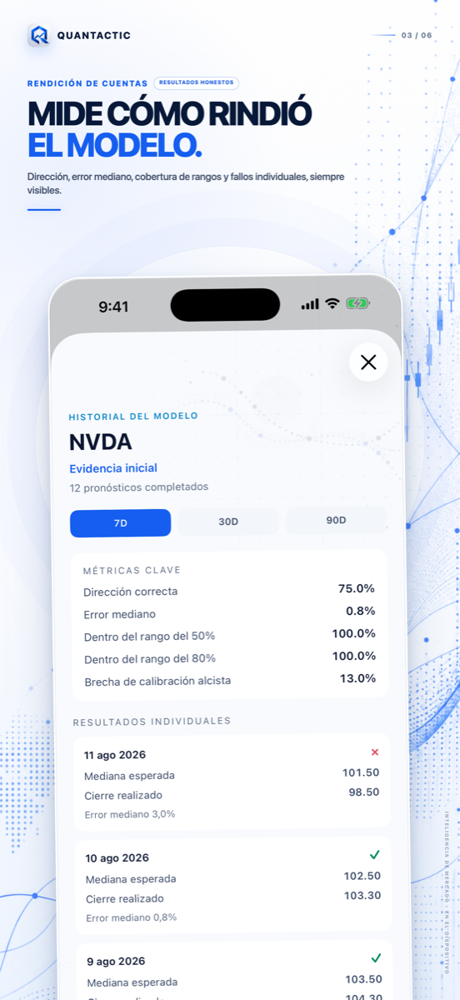
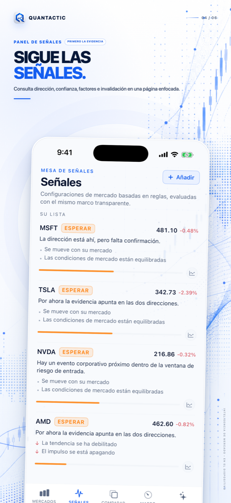
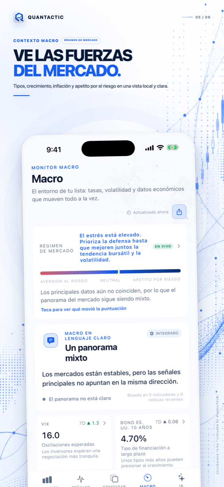
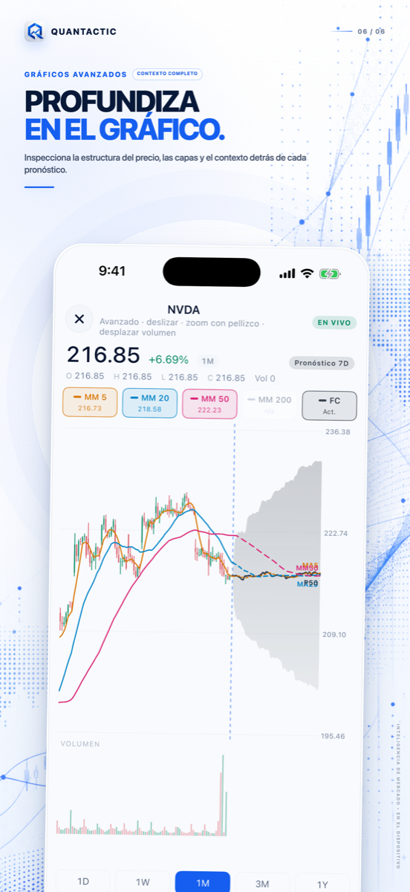

QUANTACTIC 1.3 · PRIVADO POR DISEÑO
Mira el mercado con claridad.
Conserva la evidencia.
Una mesa privada de mercado para iPhone: IA en el dispositivo, señales explicables, pronósticos probabilísticos, contexto macro y tarjetas de análisis en un flujo sereno.
iPhone · iOS 26 o posterior · Sin cuenta ni conexión a un bróker
PROBABILÍSTICO, NO PREDICTIVO
Explora el rango. Después audita el modelo.
Examina escenarios de 7, 30 y 90 días y compara pronósticos completados con resultados reales. La dirección, el error, la cobertura y los fallos siguen visibles.



SEÑALES QUE MUESTRAN SU TRABAJO
Conoce qué apoya la configuración y qué la invalida.
Las señales basadas en reglas reúnen dirección, confianza, factores medidos, riesgo y condiciones de invalidación. Sin caja negra ni catalizadores inventados.
UNA MESA DE ANÁLISIS
Contexto macro y gráficos avanzados, sin ruido.
Ten a mano tipos, volatilidad, petróleo, dólar, eventos, velas, volumen, medias, soporte, resistencia y capas de pronóstico.


QUANTACTIC PRO
Más profundidad. Sin anuncios con recompensa.
Pro ofrece pronósticos ilimitados de 7 días, escenarios completos de 30 y 90 días, más evidencia, IA privada ampliada y mayores límites.
Pronósticos completos
Ejecuciones ilimitadas de 7 días y rangos completos de 30 y 90 días.
Responsabilidad del modelo
Sigue dirección, error, cobertura y resultados individuales.
Evidencia profunda
Más detalle de señal, riesgo e invalidación.
IA privada
Más preguntas guiadas en dispositivos compatibles.
Los usuarios gratis reciben un pronóstico de 7 días por día local. Después pueden elegir ver un anuncio con recompensa para una ejecución adicional o pasarse a Pro. Nunca hay anuncios al navegar.
Ahorra aproximadamente 33% · Mejor valor
Respuestas claras antes de descargar.
¿Quantactic ejecuta operaciones?
No. No conecta cuentas de bróker, ejecuta operaciones, acepta depósitos ni gestiona inversiones.
¿Los pronósticos están garantizados?
No. Son escenarios probabilísticos, no objetivos de precio, instrucciones ni garantías.
¿Qué permanece en mi iPhone?
Listas, preferencias, registros y conversaciones compatibles se guardan localmente como indica la política. Datos, noticias, compras y anuncios requieren red.
¿Cuándo aparece un anuncio?
Solo tras usar el pronóstico diario gratis y elegir explícitamente un anuncio con recompensa para una ejecución adicional. No hay anuncios de navegación.